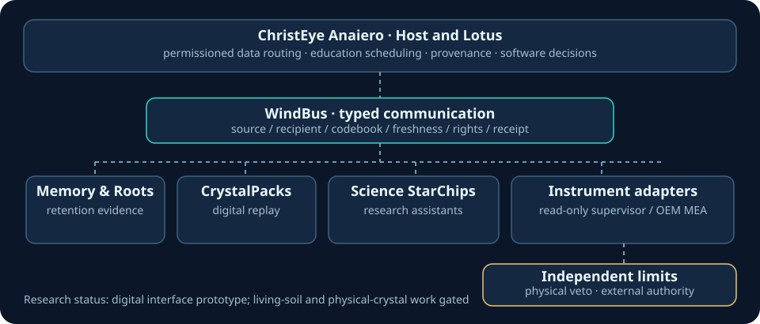

Intelligence grows through
connected systems.
A modular research architecture for developmental computing: StarChips, educational Winds, Lotus coordination, Roots and memory, versioned CrystalPacks, and independently supervised instrumentation.
One architecture, separate authorities
Lotus governs authorized education and routing. Typed WindBus events connect digital memory, Crystals and domain-specific StarChips with read-only scientific instrumentation. Independent limits retain physical authority.

Explore the system
Architecture
Lotus, Heart, Mesh and system boundaries
Scientific direction
Principal investigator, cell-foundry review and specialized assistants
Electronics
Supervisor MCUs, electrochemistry, neural acquisition and wireless status
Measurement
Lactate, RNA, protein, electrical activity and Root evidence
WindBus
Message contracts, timestamps, permissions and evaluator isolation
Crystals
Digital packaging, replay, cloning and physical carrier hypotheses
Modules
Ten paired P02B design specifications and technical companions
Research corpus
Six complete source-derived text editions
Testing & release
Simulator tests, acceptance gates and physical-release limitations
Evidence-gated development
| Phase | Deliverable | Status |
|---|---|---|
| P01 | Reference biology & contracts | Documented |
| P02 | Cell-free WindBus & teaching | Software prototype |
| P02B | Supervisory telemetry & scientific roles | Software prototype |
| P02C | Real development boards | Not validated |
| P03–P06 | Qualified neural learning and organoid research | Experimental |
| P07–P08 | Physical Crystals and scale | Future hypothesis |
From research to measured evidence
The published source editions include a Technical Companion, a Research and System Design review, the corrected Formal Models, the Physical Learning Device v0.4, and two Wind–Water–Crystal studies. All are explicitly labeled research and retain assumptions and negative results.
Browse research sources and provenanceWe Develop Software LLC
The experiments and project-owned technical documents are published under the WDS Public Research Reference License. Commercial and derivative rights are reserved as described there. Confidential patent files, private application-session logs and sensitive third-party data are excluded.
Publication policy · Scientific governance · Project decision history